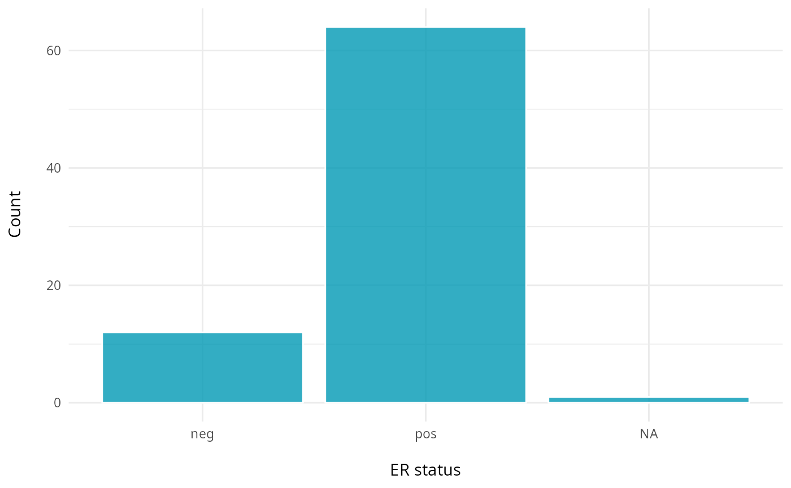
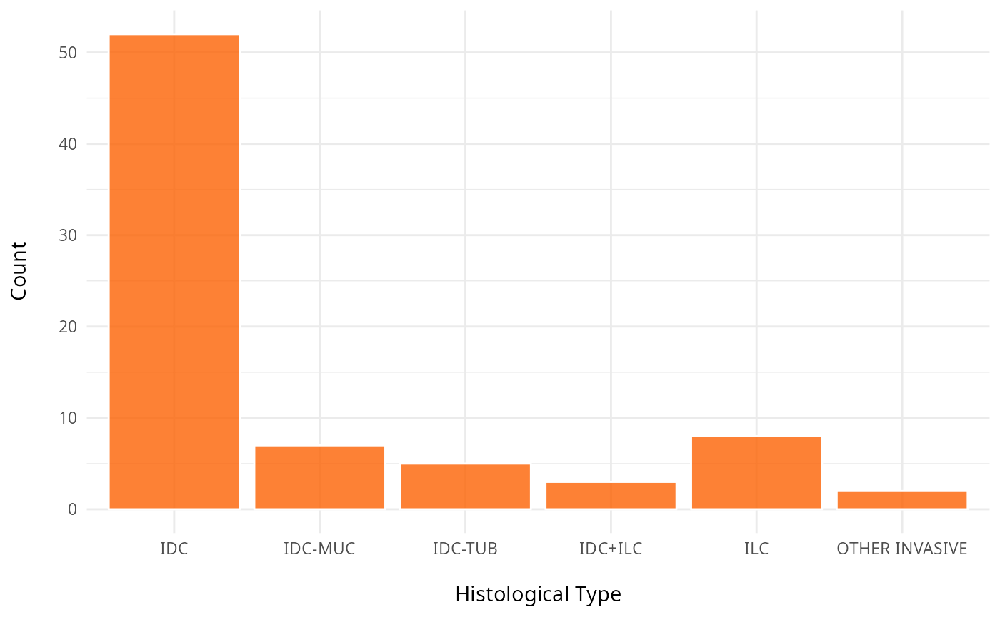
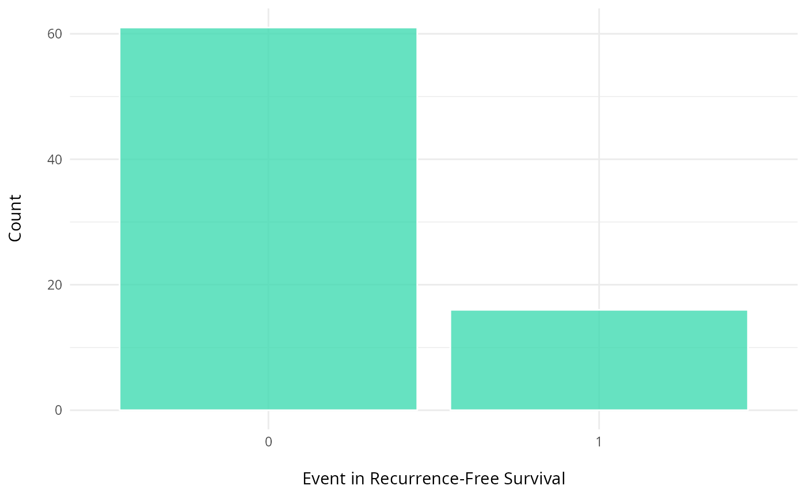
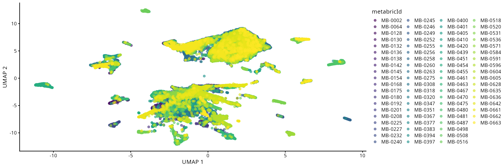

Unlocking single cell spatial omics analyses with scdney
2025-06-13
Presenting authors
Harry Robertson, Lijia Yu, Beilei Bian, Andrew Zhang, Jean Yang.
Contributors
Yue Cao, Lijia Yu, Andy Tran, Daniel Kim, Dario Strbenac, Nicholas Robertson, Helen Fu, Jean Yang.
Sydney Precision Data Science Centre, University of Sydney, Australia School of Mathematics and Statistics, University of Sydney, Australia Charles Perkins Centre, University of Sydney, Australia School of Computer Science, University of Sydney, Australia
Contact: jean.yang@sydney.edu.au
Overview
The emergence of high-resolution spatial omics technologies has revolutionized our ability to map cellular ecosystems in situ. This workshop explores approaches in multi-sample spatial data analysis. We cover end-to-end workflow considerations—from experimental design and QC to spatial feature interpretation—with case studies in disease prediction.
Understand approaches for quality control of spatial proteomics data.
Calculate spatial statistics at the cell-type level using scFeatures.
Perform multi-view disease outcome prediction with the package ClassifyR.
Develop an understanding of:
evaluation of classification and survival models .
evaluate cohort heterogeneity given a survival model.
Explore various strategies for disease outcome prognosis using spatial omics data.
Our question of interest
We want to know if the risk of recurrence in the METABRIC breast cancer cohort can be accurately estimated to inform how aggressively they need to be treated.
Part 1: Exploring the data
1.1: Initial data exploration
At the start of any analysis pipeline, it is often good to explore the data to get a sense of the structure and its complexity. Let’s explore the data to answer the questions below:
Questions
How many features and observations are there in the data and what do the features represent?
What covariates are in our data?
Given our question of interest, what variable would be our outcome variable?
# How many features and observations are in our dataset?dim(data_sce)
[1] 38 76307
In addition to the proteomics data, it’s important to understand what other covariates, such as clinical variables, are in our dataset. These can help us in answering our question(s) of interest or formulate new questions. For example, we can’t explore the association between smoking status and breast cancer severity if the variable for smoking status doesn’t exist in our data.
Now that we have a basic idea of what our data looks like, we can look at it in more detail. While initial data exploration reveals fundamental patterns, deeper examination is very helpful. As it serves two critical purposes: first, to detect anomalies or biases requiring remediation, and second, to inform our choice of analytical methods tailored to the biological questions at hand.
Looking at imbalance in data is crucial because it can lead to biased models and inaccurate predictions, especially in classification tasks. Imbalance occurs when one class is significantly underrepresented compared to others. This can cause models to be overly influenced by the majority class, leading to poor performance on the minority class. Here, we tabularise some of the relevant clinical variables and plot the distribution of the Time to Recurrence-Free Survival variable.
Code
# Estrogen receptor statusggplot(clinical, aes(x =ER.Status))+geom_bar(fill ="#0099B4", color ="white", alpha =0.8)+labs(y ="Count\n", x ="\nER status")+theme_minimal()+theme(plot.title =element_text(hjust =0.5, face ="bold"))

Code
# Histological typeggplot(clinical, aes(x =Histological.Type))+geom_bar(fill ="#fc6203", color ="white", alpha =0.8)+labs(y ="Count\n", x ="\nHistological Type")+theme_minimal()+theme(plot.title =element_text(hjust =0.5, face ="bold"))

Code
# eventRFS: "Event in Recurrence-Free Survival."It indicates whether the event has occurred.#ggplot(clinical, aes(x =factor(eventRFS)))+geom_bar(fill ="#40dbb2", color ="white", alpha =0.8)+labs(y ="Count\n", x ="\nEvent in Recurrence-Free Survival")+theme_minimal()+theme(plot.title =element_text(hjust =0.5, face ="bold"))

Code
# timeRFS: "Time to Recurrence-Free Survival." It is the time period until recurrence occurs. ggplot(clinical, aes(x =timeRFS))+geom_histogram(fill ="#de9921", color ="white", alpha =0.8, bins=20)+labs(y ="Frequency\n", x ="\ntimeRFS")+theme_minimal()+theme(plot.title =element_text(hjust =0.5, face ="bold"))
Here, we explore the distribution of the outcomes and variables in the meta-data. We use cross-tabulation to examine the following variables: Surgery vs death, ER status, and Grade.
Code
# Stage and deathtable(clinical$Breast.Surgery, clinical$Death, useNA ="ifany")
# ER status and gradetable(clinical$ER.Status, clinical$Grade)
1 2 3
neg 0 0 11
pos 13 30 17
Code
# "Number of individuals based on Gradetable(clinical$Grade, clinical$Death)
0 1
1 12 2
2 25 5
3 17 11
To assess potential batch effects and sample-specific clustering patterns, we visualize the cells in our data colored by the sample of origin. This qualitative inspection provides an intuitive first assessment of any batch effects in our data integration. If there is batch effects then we’d need to apply batch correction to resolve this issue.
Code
#data_sce <- runUMAP(data_sce, scale=TRUE)# With the UMAP function we can highlight by meta data of interest# Here we highlight the UMAP by sample IDplotUMAP(data_sce, colour_by ="metabricId")+theme(legend.position ="none")+coord_equal()

Discussion
Are there any anomalies or biases that might need to be corrected to ensure our analysis is robust?
Given our question of interest and the characteristics of our data, are there any particular analytic techniques that would be appropriate? Are there any that would not be appropriate?
Part 2: Quality control
Here, we explore key approaches for evaluating the quality of IMC data. A robust assessment should consider multiple factors, including the density of marker expression, marker correlations, and their co-expression. Something we might want to think about is what characeristics might indicate whether a sample(s) is low/high quality?
Here, we want to assess the quality of the markers: it is desirable to see at least two peaks, which would indicate the existence of cell type specific markers in our data.
Questions
Can we see any cell type specific markers, which are they?
Do we have a sufficient amount of cell type specific markers?
Is the panel of genes sufficient for our study?
2.2: QC of individual samples
Here we plot the correlation of different markers for a subset of samples. This helps us determine whether a sample has low/high contamination of markers.
Questions
Which pairs of markers do we expect to be correlated/not correlated.
Is there any evidence of marker contamination for a given sample?
Are there any samples you would like to remove from the data?
Which samples would you like to keep?
Code
cell_counts<-IMC@colData|>as.data.frame()|>dplyr::count(metabricId, name ="cell_count")|># Count rows per metabricIddplyr::arrange(desc(cell_count))mean_coexp_per_sample<-coexp_df%>%select(-cell_id, -cell_type)%>%# remove columns not related to prob valuesgroup_by(metabricId)%>%summarise(mean_coexp_prob =mean(c_across(where(is.numeric)), na.rm =TRUE))%>%ungroup()merged_df<-left_join(mean_coexp_per_sample, cell_counts, by ="metabricId")# Scatter plotggplot(merged_df, aes(x =cell_count, y =mean_coexp_prob))+geom_point(size =3, color ="steelblue")+labs( x ="Cell Count per Sample", y ="Mean Co-expression Probability", title ="Mean Co-expression vs. Cell Count")+theme_minimal(base_size =14)
2.4: Does my data agree with literature?
Another way to QC our data is to explore whether the DE genes or associations we find matches current literature. For example, we have a breast cancer cohort. Breast cancer is very well studied and so it should be very easy to perform a DE analysis after pseudobulking our data to see if it makes findings in previous bulk RNA-seq studies of breast cancer cohorts. We can also do this at the single-cell level and compare with previous single-cell proteomic/RNA-seq studies of breast cancer cohorts. We won’t be running the code below. But here is an example of how one might perform a basic DE analysis using package limma.
Code
# Note: The same approach can be used for pseudobulk or single-cell level data. # Just change `logcounts(data_sce)`# We want low ki67 to be the reference level (baseline level) data_sce$ki67<-factor(data_sce$ki67, levels=c("low_ki67", "high_ki67"))# Here we specify the design matrix. We are specifying that Y are the expression values and X is ki67 status (but it could be any other variable - such as "good" or "bad" prognosis)# Y~X: Expression as a function of ki67 status. design_matrix<-model.matrix(~data_sce$ki67)# Fit modelfit<-lmFit(logcounts(data_sce), design =design_matrix)# Estimate variance and SE of coefficientsfit<-eBayes(fit)tt<-topTable(fit, coef =2, n =5, adjust.method ="BH", sort.by ="p")tt
How might be check whether these results make sense? What potential issues might we find?
Part 3: Exploring spatial data
This section assumes pre-existing cell type annotations. For unannotated data, two primary annotation strategies are available:
Unsupervised approach: cluster cells and identify marker genes for manual annotation.
Supervised approach: transfer labels from reference datasets using supervised learning/classification tools.
For supervised annotation, we recommend scClassify, a robust framework for cell-type classification. Below we visualise the data with and without spatial information before exploring the data further.
Cell types
Following initial assessment of potential batch effects through sample-origin visualization, we now examine cell-type-specific clustering patterns. Distinct, biologically meaningful clusters should emerge for each annotated cell type. The presence of heterogeneous clusters containing unrelated cell types may indicate incomplete or inaccurate cell-type annotations.
Code
plotUMAP(data_sce, colour_by ="description")
Spatial structure
The advantage with spatial omics is that we can examine the organisation of the cell-types as it occurs on the tissue slide. Here, we visualise one of the slides from a patient. We select a particular patient “MB-0002” and visualise the tissue sample from this patient using ggplot. Do we see any spatial patterning or does it look randomly distributed?
Code
# obtaining the meta data for this patient one_sample<-data_sce[, data_sce$metabricId=="MB-0002"]one_sample<-data.frame(colData(one_sample))ggplot(one_sample, aes(x =Location_Center_X, y =Location_Center_Y, colour =description))+geom_point(alpha=0.7)+scale_colour_tableau()+theme(panel.background=element_blank(), axis.line=element_line(color="black"))+ggtitle("Original slide")
Questions
What kinds of spatial information might be of interest given the question we’d like to answer?
How might we try to capture these spatial relationships?
We can better interpret the region output by summarising the proportion of each cell-type in a region across the individuals. We look at the composition of cell-types in each region and compare between prognostic outcomes.
`summarise()` has grouped output by 'Var1', 'Var2'. You can override using the
`.groups` argument.
The number of sub-cell types increase considerably when we want to add spatial domain (region) information. To enhance clarity and facilitate understanding, it may be helpful to choose a predetermined region. The code generates a set of boxplots that enable the comparison of cell-type proportions between individuals with good and poor prognosis in region_5.
Here, we use scFeatures to generate molecular features for each individual using the features x cells matrices. These features are interpretable and can be used for downstream analyses. In general, scFeatures generates features across six categories:
Cell-type proportions.
Cell-type specific gene expressions.
Cell-type specific pathway expressions.
Cell-type interaction scores.
Aggregated gene expressions.
Spatial metrics: Nearest neighbour’s correlation, L statistics, and Moran’s I.
The different types of features constructed enable a more comprehensive multi-view understanding of each individual. By default, the function will generate a total of 13 different types of features and are stored as 13 samples x features matrices, one for each feature type.
In this section, we will examine spatial information from two perspectives. Utilising spatial domain detection described in part 3, we select a specific region of interest and create molecular representations of that region for each individual (Section 4.1). Second, we will utilise spatial statistics to capture spatial relationships within the region of interest, such as Moran’s I (Section 4.2)
Code
region<-data_sce$region# Define a series of sub-cell-types that is regional specificdata_sce$celltype<-paste0(data_sce$description , "-" , region)
4.1 How to create molecular representations of individuals for an ROI?
Here, we can consider regional information and the following code allows us to create cell-type specific features for each region. We use the function “paste0” to construct region-specific sub cell-types and name it as celltype in the R object data_sce. For simplicity, in this workshop, the variable celltype in the R object data_sce refers to region-specific sub-cell-types.
There are a total of 13 different types of features (feature_types) that you can choose to generate. The argument type refers the type of input data we have. This is either scrna (single-cell RNA-sequencing data), spatial_p (spatial proteomics data), or spatial_t (single-cell spatial data). In this section, we will ignore spatial information and generate non-spatial features, such as pseudobulking at the sample /cell type levels, overall expression, cell type proportions etc…
Are there any regions that are associated with “good” and “poor” prognosis?
Is this the right way to visualise the results?
Code
## [A] The next few lines extract specific information from data_sce as input to scFeatures. ## Select the HR- CK7+-region sub-cell-type # There are different ways you can use `scFeatures` to generate molecular representations for individuals and it requires the following information for spatial data.# # data,\# sample,# X coordinates,# Y coordinates,# feature_types, and# typeindex<-grep("HR- CK7+-region" , data_sce$celltype, fixed=TRUE)selected_data<-IMCmatrix[, index]selected_sample<-sample[index]selected_celltype<-data_sce$celltype[index]selected_spatialCoords<-list(colData(data_sce)$Location_Center_X[index], colData(data_sce)$Location_Center_Y[index])### [B] Running scFeaturesscfeatures_result<-scFeatures(selected_data, sample =selected_sample, celltype =selected_celltype, spatialCoords =selected_spatialCoords, feature_types ="proportion_raw", type ="spatial_p")### [C] Visualize the regional composition makeup for each individual for HR- CK7+ and HR- CK7-feature<-scfeatures_result$proportion_rawfeature<-feature[grep("poor|good", rownames(feature)), ]plot_barplot(feature)+ggtitle("Proportion raw feature")+labs(y ="proportion\n")
The code below enable us to generate all feature types for all cell-types in a line. Due to limitations with today’s computational capacity, Please DO NOT run it in today’s workshop, it will crash your system.
# here, we specify that this is a spatial proteomics data# scFeatures support parallel computation to speed up the processscfeatures_result<-scFeatures(IMCmatrix, type ="spatial_p", sample =sample, celltype =celltype, spatialCoords =spatialCoords, ncores =32)
Assuming you have already generated a collection of molecular representation for individuals, please load the prepared RDS file scfeatures_result.RDS. Again, you can remind yourself that all generated feature types are stored in a matrix of samples x features.
Code
# Upload pre-generated RDS filescfeatures_result<-readRDS("data/scfeatures_result.RDS")# What are the features and the dimensions of features matrices that we have generated?lapply(scfeatures_result, dim)
4.2 How can we represent spatial information and relationships for a given individual?
We will now look at the spatial statistic output by scFeatures and qualitively assess whether there is any association between between these statistics and the “good” and “bad” prognosis groups.
Questions
What kind of information would spatial statistics provide?
Are there any differences in the distribution of spatial statistics between the “good” and “bad” prognosis groups?
The L function is a spatial statistic used to assess the spatial distribution of cell-types. It assesses the significance of cell-cell interactions, by calculating the density of a cell-type with other cell-types within a certain radius. High values indicate spatial association (co-localisation), low values indicate spatial avoidance.For clarity, we plot the L statistics for a subset of regions.
Moran’s I is a spatial autocorrelation statistic based on both location and values. It quantifies whether similar values tend to occur near each other or are dispersed.
Recurrence risk estimation is a fundamental concern in medical research, particularly in the context of patient survival analysis. In this section, we will estimate recurrence risk using the molecular representation of individuals generated from scFeatures to build a survival model. We will use classifyR to build the survival model. The patient outcome is time-to-event, so, by default, ClassifyR will use Cox proportional hazards ranking to choose a set of features and also Cox proportional hazards to predict risk scores. We will also demonstrate other available models in ClassifyR.
Questions
Are spatial features globally informative in predicting survival?
If not, for which individuals is it important in predicting survival?
To examine the distribution of prognostic performance, use performancePlot. Currently, the only metric for time-to-event data is C-index and that will automatically be used because the predictive model type is tracked inside of the result objects.
Code
## Make axis label 45 degree to improve readiability tilt<-theme(axis.text.x =element_text(angle =45, vjust =1, hjust =1))## Putting two sets of cross-validation results togethermultiresults<-append(classifyr_result_IMC, survForestCV)ordering<-c("clinical", names(scfeatures_result))performancePlot(multiresults, characteristicsList =list(x ="Assay Name", row ="Classifier Name"), orderingList =list("Assay Name"=ordering))+tilt
Note how the resultant plot is a ggplot2 object and can be further modified. The same code could be used for a categorical classifier because the random forest implementation provided by the ranger package has the same interface for both. We will examine feature selection stability with selectionPlot.
Does each individual require a different collection of features? Using samplesMetricMap compare the per-sample C-index for Cox models for all kinds of metafeatures.
TableGrob (2 x 1) "arrange": 2 grobs
z cells name grob
1 1 (2-2,1-1) arrange gtable[layout]
2 2 (1-1,1-1) arrange text[GRID.text.9062]
Appendix
Explanation of spatial features
L function:
The L function is a spatial statistic used to assess the spatial distribution of cell-types. It assesses the significance of cell-cell interactions, by calculating the density of a cell-type with other cell-types within a certain radius. High values indicate spatial association (co-localisation), low values indicate spatial avoidance.
Code
tableau_palette<-scale_colour_tableau( palette ="Tableau 20")color_codes<-tableau_palette$palette(10)# select one patient one_sample<-data_sce[ , data_sce$metabricId=="MB-0128"]one_sample<-data.frame(colData(one_sample))one_sample$celltype<-one_sample$description# select certain cell types to examine the interaction index<-one_sample$celltype%in%c("B cells", "Fibroblasts")one_sample$celltype[!index]<-"others"a<-ggplot(one_sample, aes(x =Location_Center_X , y =Location_Center_Y, colour =celltype))+geom_point()+scale_colour_manual(values =color_codes)+ggtitle("Patient MB-0128 - high L value with \n B cells interacting Fibroblasts")one_sample$celltype<-one_sample$descriptionindex<-one_sample$celltype%in%c("Fibroblasts", "HR- CK7-")one_sample$celltype[!index]<-"others"b<-ggplot(one_sample, aes(x =Location_Center_X , y =Location_Center_Y, colour =celltype))+geom_point()+scale_colour_manual(values =color_codes)+ggtitle("Patient MB-0128 - low L value with \n B cells interacting HR_ CK7")ggarrange(plotlist =list(a,b))
Cell type interaction composition:
We calculate the nearest neighbours of each cell and then calculate the pairs of cell-types based on the nearest neighbour. This allows us to summarise it into a cell-type interaction composition.
Moran’s I is a spatial autocorrelation statistic based on both location and values. It quantifies whether similar values tend to occur near each other or are dispersed.
Code
high<-data_sce["Ki67", data_sce$metabricId=="MB-0132"]high_meta<-data.frame(colData(high))high_meta$expression<-as.vector(logcounts(high))low<-data_sce["Ki67", data_sce$metabricId=="MB-0249"]low_meta<-data.frame(colData(low))low_meta$expression<-as.vector(logcounts(low))a<-ggplot(high_meta, aes(x =Location_Center_X , y =Location_Center_Y, colour =expression))+geom_point(alpha=0.5)+scale_colour_viridis_c()+ggtitle("Patient MB-0132 - high Moran's I in Ki67")b<-ggplot(low_meta, aes(x =Location_Center_X , y =Location_Center_Y, colour =expression))+geom_point(alpha=0.5)+scale_colour_viridis_c()+ggtitle("Patient MB-0249 - low Moran's I in Ki67")ggarrange(plotlist =list(a,b))
Nearest Neighbor Correlation:
This metric measures the correlation of proteins/genes between a cell and its nearest neighbour cell.
Code
plot_nncorrelation<-function(thissample , thisprotein){sample_name<-thissamplethissample<-data_sce[, data_sce$metabricId==sample_name]exprsMat<-logcounts(thissample)# calculate NN correlation cell_points_cts<-spatstat.geom::ppp( x =as.numeric(thissample$Location_Center_X), y =as.numeric(thissample$Location_Center_Y), check =FALSE, xrange =c(min(as.numeric(thissample$Location_Center_X)),max(as.numeric(thissample$Location_Center_X))), yrange =c(min(as.numeric(thissample$Location_Center_Y)),max(as.numeric(thissample$Location_Center_Y))), marks =t(as.matrix(exprsMat)))value<-spatstat.explore::nncorr(cell_points_cts)["correlation", ]value<-value[thisprotein]# Find the indices of the two nearest neighbors for each cellnn_indices<-nnwhich(cell_points_cts, k =1)protein<-thisproteindf<-data.frame(thiscell_exprs =exprsMat[protein, ] , exprs =exprsMat[protein,nn_indices])p<-ggplot(df, aes( x =thiscell_exprs , y =exprs , colour =exprs))+geom_point(alpha =0.3)+ggtitle(paste0("Patient ", sample_name , " nn_corr = " , round(value, 2)))+scale_colour_viridis_c()+xlab("This cell expression")+ylab("Neighbouring cell expression")return(p)}p1<-plot_nncorrelation("MB-0605", "HER2")p2<-plot_nncorrelation("MB-0258", "HER2")ggarrange(plotlist =list(p1, p2))
The authors thank all their colleagues, particularly at The University of Sydney, Sydney Precision Data Science and Charles Perkins Centre for their support and intellectual engagement. Special thanks to Ellis Patrick, Shila Ghazanfar, Andy Tran, Helen, and Daniel for guiding and supporting the building of this workshop.